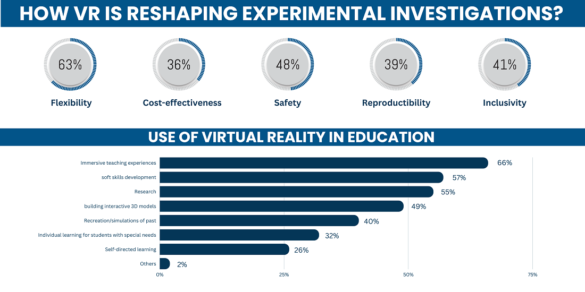
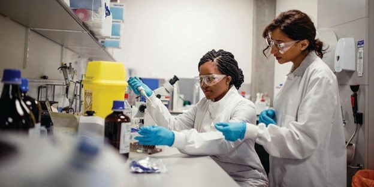
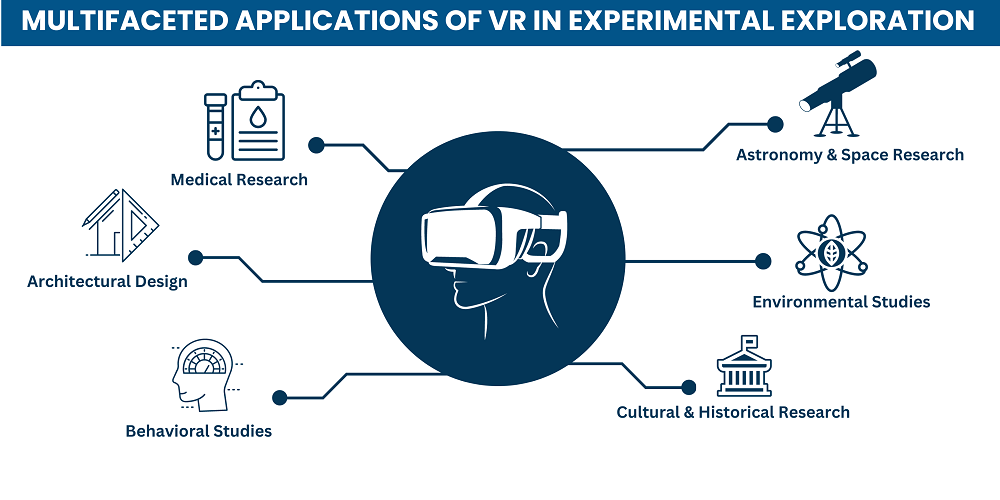

The digital era has brought forth many marvels, and Virtual Reality (VR) is one among them. As VR has matured, it has begun to redefine the boundaries of various sectors, most notably in experimental research and design. With the introduction of VR into this domain, we are witnessing a groundbreaking transformation in how experiments are structured, and conducted, and the subsequent data management.
Historically, experimental research has provided the foundation for scientific discovery. It's a systematic approach used to unravel complex queries by actively manipulating variables and studying the results.
Previously, conducting these systematic studies required physical laboratories filled with niche equipment. Constraints such as scalability and iteration often hindered the progress. However, the applications of VR in experimental research and spatial learning have dissolved many of these barriers, heralding a new dawn for experimental design and implementation.
In recent decades, VR experiments have emerged as a fundamental component of comprehensive human behavioral analysis (HBA) research, spanning fields from psychology (Gaggioli, 2001) to architecture (Whyte, 2003) and economics (Innocenti, 2017).
Understanding the Role of VR in Experimental Exploration
Every successful experimental research revolves around a solid experimental design, which serves as a roadmap for the study, defining how tests should be administered, which variables to monitor, and how to interpret the findings. Conventional methods have always been confined by real-world limitations, i.e., space, equipment, or even environmental variables.
However, the integration of VR in experimental research has fundamentally changed the playing field.
By virtue of VR, researchers can simulate a real or even an enhanced environment that could be impossible in the physical world. This means that experimental design is no longer curtailed by tangible barriers. The VR in the experimental research framework enables recreations of real-world scenarios with exceptional accuracy, and also the crafting of new, previously unimagined conditions to better understand intricate events.
Consider an experiment on how humans react to extreme climatic conditions. Before VR, replicating a desert's heat or the chill of polar regions in a controlled environment was cumbersome. But now, with VR, participants can virtually experience these conditions without moving an inch from the lab, ensuring heightened accuracy in experimental designs and encouraging innovative research techniques.
How VR is Reshaping Experimental Investigations?

Utilizing VR for experiments has restructured the traditional research approach.
VR provides the means to fabricate controlled digital environments, free from real-world constraints. This independence has empowered scientists to evaluate theories previously seen as too dangerous, too costly, or downright unfeasible.
Advantages VR offers to experimental research
☑️ Flexibility
With VR, researchers can effortlessly replicate real-world conditions or even create hyper-realistic simulations of scenarios that might be logistically impossible in the real world. From simulating outer space conditions to recreating the deep-sea environment, the applications of VR in experimental research are vast and varied.
☑️ Cost-effectiveness
Traditionally, updating or replacing equipment has always been a significant concern both in terms of cost and time. With VR, however, these concerns are notably diminished. The ability to modify or upgrade the experimental setup is now just a software update away, leading to significant savings and ensuring that researchers are always working with the latest tools at their disposal.

☑️ Safety
Experimental research often treads into territories where real-world testing can be hazardous. Whether it's testing the impact of a new drug or experimenting with volatile chemical reactions, adhering to lab safety rules is crucial. VR allows for these experimental designs to be conducted in a controlled, virtual space, mitigating potential risks and dangers.
☑️ Reproducibility
One of the perennial challenges in experimental research has been ensuring the reproducibility of results. Minor variations in conditions or setups can lead to vastly different outcomes. However, VR brings an unprecedented level of precision to the table.
Experiments can be set up with meticulous detail, and these conditions can be saved, shared, and replicated with pinpoint accuracy, ensuring that the reliability of results isn't compromised.
☑️ Inclusivity
VR in experimental research also democratizes access. Researchers from across the globe can collaborate in a unified virtual space, bringing diverse perspectives and expertise to the table. It eliminates geographical barriers, ensuring that the best minds can work together irrespective of their physical location.
Take your experimental research to the next level with VR technology—making your designs safer, more accurate, and easier to explore than ever before.
VR's Resounding Impact on Scientific Education
Its influence stretches beyond just experimental design and research to experimental teaching. Experiential learning in college, especially in scientific sectors, traditionally depended on tangible labs and equipment. However, the incorporation of VR in science colleges is reshaping this paradigm.
Virtual labs, powered by VR, allow students to conduct experiments, grasp multifaceted theories, and visualize intangible notions, all within a virtual realm. This not only elevates understanding but also prioritizes safety.
Multifaceted Applications of VR in Experimental Exploration

Whether in medical research, behavioral studies, astronomy, architectural creations, environmental assessments, or historical and cultural research, VR for higher education has made inroads, enhancing the depth and breadth of research and study.
☑️ Medical Research
Medical students and professionals can practice surgical procedures in vr before performing actual surgeries, substantially reducing the risk of errors.
Additionally, VR allows for a deeper exploration of the human anatomy. Medical professionals can virtually step inside organs, systems, and cells, gaining a comprehensive understanding of diseases and treatments.
This technology is also becoming invaluable for patient education, enabling individuals to visually comprehend complex procedures and conditions.
☑️ Behavioral Studies
Beyond the field of physical sciences, VR has become a cornerstone tool for psychologists and sociologists.
By immersing participants in controlled virtual scenarios, researchers can study human behavior, reactions, and decisions in meticulously crafted environments. These can range from recreating traumatic events to help study and treat PTSD, to simulating social scenarios to understand the intricacies of human interactions.
VR for science colleges has unlocked a myriad of possibilities, allowing researchers to standardize conditions across participants, ensuring the reliability of results.
☑️ Astronomy & Space Research
The vast expanse of space has always fascinated humans, but it remains largely unexplored due to the myriad of challenges associated with space missions.
VR in astronomy is now making it possible to simulate these missions, allowing researchers to prepare for real-life space scenarios.
Astronomers can take virtual strolls on distant planets or get up-close views of stars and galaxies, amassing crucial data for future explorations. Moreover, educational institutions are using VR to simulate space environments, allowing students to grasp complex astronomical concepts experientially.
☑️ Architectural Design
The world of architectural design has been radically changed with the advent of VR.
Architects and designers can now create structures in 3D virtual space, walk through them, and even experience different environmental conditions inside these virtual structures. This means that before a single brick is laid, architects can optimize a design for light, sound, and energy efficiency.
Clients can take virtual tours of their future homes or offices, suggesting changes based on their real-time experience. This immersive approach reduces the margin of error, saves resources, and fosters better architect-client collaboration.
☑️ Environmental Studies
Yet another application worth noting is the study of our environment. Conservationists and environmental scientists can use VR to simulate and study the effects of climate change on various ecosystems without disturbing the actual habitats. It becomes possible to virtually immerse oneself in, say, a melting polar ice cap or a forest threatened by deforestation.
Such simulations can be vital not just for research, but also for raising awareness and educating the public on pressing environmental issues.
☑️ Cultural & Historical Research
Anthropologists and historians have started using VR to recreate ancient civilizations or lost cultural practices.
This allows them not only to study but also to experience events, rituals, or lifestyles of bygone eras. Museums and educational institutions are also leveraging this, offering visitors and students a chance to virtually live a day in ancient Rome or witness a significant historical event firsthand.
VR's Rising Stature in Higher Academia
In the sphere of higher education, VR is bridging the divide between theoretical knowledge and its practical implementation. VR for higher education, especially in science colleges, ensures each student has unrestricted access to top-notch equipment and experimental setups, albeit digitally.
☑️ What are Virtual Labs?
Virtual labs, a significant facet of VR in experimental teaching, sidestep the limitations and challenges traditional labs face. Students have the liberty to design complex experiments, adjust variables, observe results, and adjust, all within a safe, controlled digital sphere.
With virtual labs, the horizon for VR's role in experimental research is expansive. As technology progresses, the ways we employ VR for experimental design and teaching will evolve as well. One can envisage a time when global students collaborate in a unified virtual lab or where researchers validate their theories virtually before real-world applications.
Conclusion
In Conclusion, the applications of VR in experimental research and design are sculpting new frontiers. From enhancing experimental research's precision to transforming experimental teaching methodologies, VR is laying the groundwork for an innovative era of scientific exploration and education.
As VR further integrates into our educational establishments, notably science colleges, an enriched, immersive learning experience awaits. It's evident that as we advance, VR will be more than just an add-on but an indispensable asset for contemporary researchers and educators.